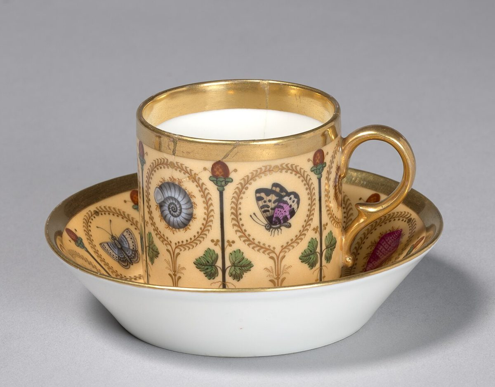

×三 メニュー
メニュー
メニューと価格は準備中です。確認でき次第、こちらに掲載します。
下の枠は、メニューが入る場所をイメージした空欄です。提供内容を示すものではありません。写真もフリー素材で、お店で提供しているものではありません。
- ×1準備中
- ×2準備中
- ×3準備中
- ×4準備中
- ×5準備中
- ×6準備中
| メニュー | 準備中 |
|---|---|
| 価格 | 準備中 |
| ご予約 | 準備中 |



×三 メニュー
メニューと価格は準備中です。確認でき次第、こちらに掲載します。
下の枠は、メニューが入る場所をイメージした空欄です。提供内容を示すものではありません。写真もフリー素材で、お店で提供しているものではありません。
| メニュー | 準備中 |
|---|---|
| 価格 | 準備中 |
| ご予約 | 準備中 |
